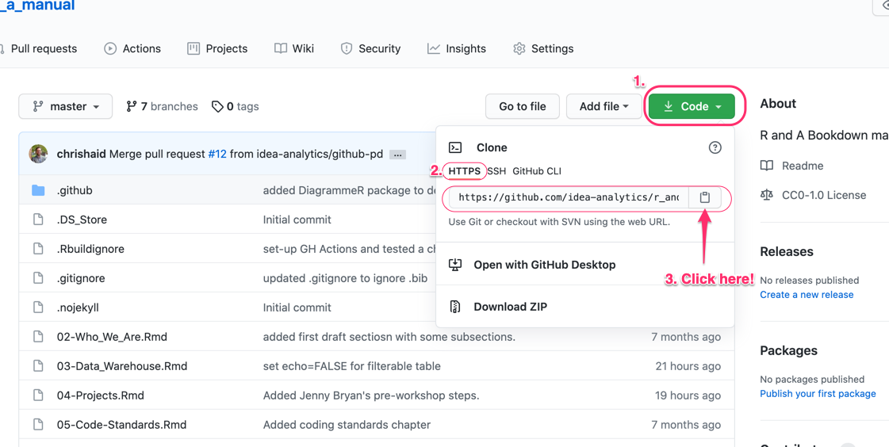
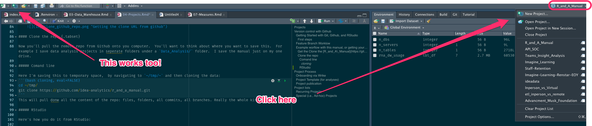
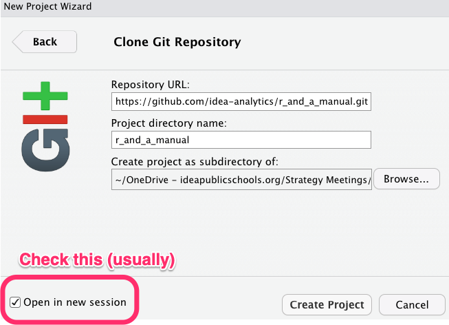
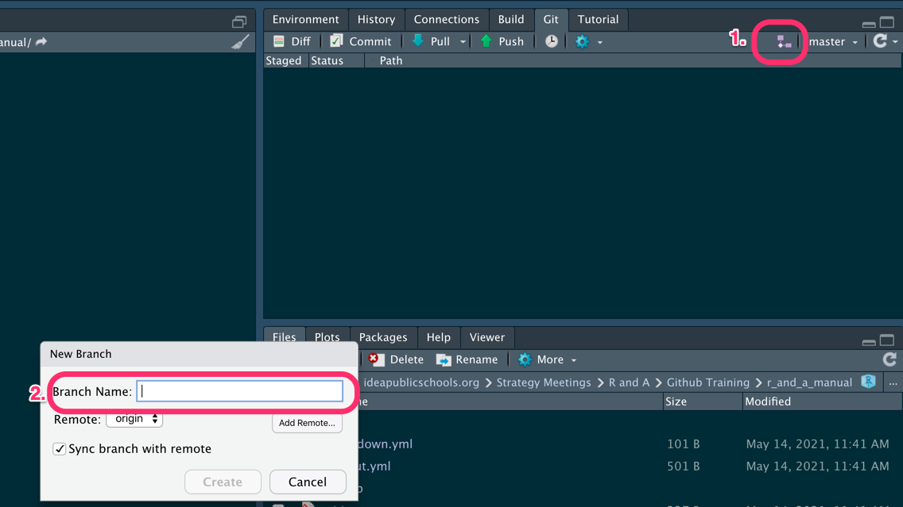
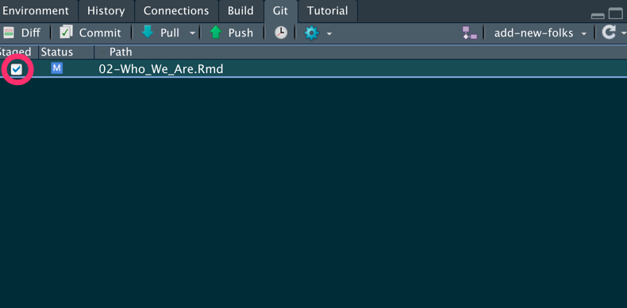
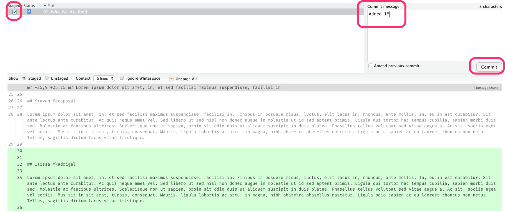
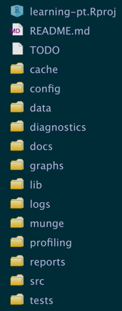
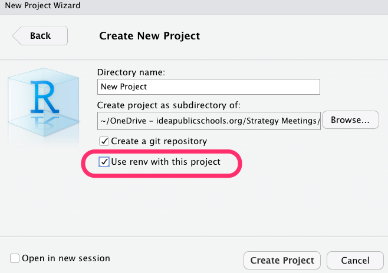

Chapter 4 Projects
Some significant applications are demonstrated in this chapter.
4.1 Version control with Github
All analysis projects need to be saved via Git (on your local computer) and pushed to Github. Doing so has several benefits to both you, to your future self, and to your teammates:
- Since Git is a version control system, you get to save and track changes in your work (data, source code, reports, PowerPoint decks, Shiny dashboards) incrementally.
- Incremental saving means you can recover from any accidental plunders. It’s like Track Changes in Word, but for multiple files and folders. Spill a Diet Coke on your laptop in the middle of a big analysis? No big deal (if you’ve been pushing commits to Github, it’ll all be there!)
- Collaboration is much more structured, with powerful tools for asynchronous work and managing versions.
- Referencing and reviewing code, tracking issues, and sharing what you’ve done is seamless, which means …
- Your work will be reproducible: anyone from R&A can pull your repo from Github, run your analyses, add to or edit what you’ve done, and share those changes back in a way that is communicative and documented.
- setting up web documentation for any R packages you build become seamless.
But enough on the why let’s get to how (if you do want to know more on the why, check out this excellent article by Jenny Bryan)
4.1.1 Getting Started with Git, Github, and RStudio
Here’s a quick overview of what you’ll need to do, with details to follow:
Dedicate a directory (a.k.a “folder”) to it.
Make it an RStudio Project.
Make it a Git repository.
Go about your usual business. But instead of only saving individual files, periodically you make a commit, which takes a multi-file snapshot of the entire project.
Push commits to GitHub periodically.
- This is like sharing a document with colleagues on OneDrive or DropBox or sending it out as an email attachment.
4.1.1.1 First steps
These steps are borrowed with some light editing from Happy git with R by Jenny Bryan.
- Register for GitHub account.
- Install or update R and RStudio
- Install Git
- Those on Windows will want to do these steps as well
- Introduce yourself to Git.
- Prove local Git can talk to GitHub.
- Cache your username and password so you don’t need to authenticate yourself to GitHub interactively ad nauseum.
- Create and save a GitHub Personal Access Token (PAT).
- Prove RStudio can find local Git and, therefore, can talk to GitHub.
4.1.2 Feature Branch Worklow
There are many workflows using Git and remote repositories like Github. All of thenm boil down to the following steps:
- Pull or fetch or clone a repo on Github to your local machine. If you are starting a new project, then you’ll need to create a new repo on Github (but you can also start one on your machine). This is usually called the main (formerly master) branch.
- Create a new branch that you will work on.
- Do some analysis, coding, writing.
- Periodically save a snapshot of your entire project (all the files and folders, except those that you explicitly ignore). This is called *committing changes**.
- Every once ins while push your commits to the remote repo. Congrats! You’ve just backed up your remotely and made it easy to share.
- Merge your new analysis and code back into the main branch. This is usually initiated by something called a pull request (which is admittedly a little confusing).
The specific workflow we use on IDEA’s R&A team is the Feature Branch workflow, which has the benefit of being both simple, while minimizing merge conflicts. The core idea behind the Feature Branch Workflow is that all feature development should take place in a dedicated branch instead of the main branch. This encapsulation makes it easy for multiple analysts to work on a particular analysis without disturbing the main codebase. It also means the main branch will never contain broken code. Moreover, it means you’ll be more likely to get a second or third set of eyes on our analysis. This makes your work more transparent, helps enforce coding standards, and helps spread all the cool new techniques you’ve implemented in your analysis.
So what does this look like? Well, here’s a picture of the feature branch workflow in use for this manual:
This picture shows the development of this manual over time (from left to right) as rendered by Github’s network diagram: it includes new branches being created, commits being made and merges back into the main branch. The black line is the main branch and includes the most up-to-date, “official” version of this book. The green and blue lines are feature branches, which diverge from the main when you checkout a new branch. The dots represent commits. Colored lines returning to the main branch indicate a merge: the new code is now part of of the main branch. You might be wondering what the unmerged yellow line labeld gh-page represents. That is a special branch that is used by Githbub Actions that uses the concept of continuous integration/continuous to build the website that hosts this manual. You don’t need to worry about that one; it’s simply used to build out the site magically.
4.1.3 Example worflow with this manual, or getting your feet wet
This section is going to walk you through how to use git/github by updating this manual. You’ll (i) clone the Github repo locally on your laptop, (ii) create a feature branch, (iii) make some changes to this documentation, save those changes, and then commit those changes git (i.e., locally take a snapshot), (iv) push those changes (including all of your commits) up to the Github repo, (v) initiate a pull request (i.e., ask to merge your branch into the main branch), and finally (vi) merge your changes into the master branch.
But first things first:
- Verify you did the initial set-up steps above
- Get your bio ready
**Note that throughout the steps below I’ll show you how to each step Ok. Your ready? Great! Here we go.
4.1.3.1 Get the R_and_A_Manual repository URL
Go to R_and_A_Manual repo in your browser.
On the main page for the repo click the green Code button, Click on HTTPS (the default), and click the clipboard to copy the repo’s URL:

4.1.3.2 Clone the repo
Now you’ll pull the remote repo from Github onto you computer. You’ll want to think about where you want to save this. For example I save data analysis projects in seperate folders under a Data_Analysis/ folder. I save the manual just on my one drive.
4.1.3.2.1 Comand line
Here I’m saving this to temporary space, by navigating to ~/tmp/~ and then cloning the data:
This will pull down all the content of the repo: files, folders, all commits, all branches. Really the whole kit and kaboodle.
4.1.3.2.2 RStudio
Here’s how you do it from RStudio:
- In RStudio, start a new Project: File > New Project > Version Control > Git, or click on project icon in the upper right-hand corner of the IDE and select New Project….

- In the “repository URL” paste the URL of your new GitHub repository. That is: https://github.com/idea-analytics/r_and_a_manual.git
- Be intentional about where you create this project.
- You should click “Open in new session”.

- Click Create Project to create a new directory, which will be all of these things:
- a directory or “folder” on your computer
- a Git repository, linked to the remote GitHub repository
- an RStudio Project
Cool. You should now have the R&A Manual files on repo history on your computer!
4.1.3.3 Checkout a branch
Before you start doing anything you should check out a branch. A branch is like your own, tempory, disposable workspace. When you checkout a branch you create a new copy of the the repo and changes you make only happen on the branch. When your happy with the changes and are ready to share them you’ll to a pull request. But we’ll get to that below.
4.1.3.3.1 Command line
It’s pretty straightforward. You create the branch, by giving a short but meaningful name, and then check it out.
Or you can do both of those moves in one line by using git checkout with the -b flag:
4.1.3.3.2 RStudio
- Click on the Git panel (usually in the upper right on that standard RStudio layout, but YMMV if you’ve customized your layouts).
- Click on the purple “branch” icon (it kinda looks like a piece of a flowchart).

- Giving a short but meaningful name (something like,
update-bio-cjh). Make sure the Sync branch with remote checkbox is selected; this will save you a step later when you push you changes up to the repo.
4.1.3.4 Making changes and saving them
You now on a new branch and go go makes some changes. Go ahead and open 02-Who_We_Are.Rmd file and add your name as a section, update your bio and save it, as you usually would
Now you’ll want to commit those changes, which takes a snapshot of the current state on the branch you are working on.
4.1.3.5 Command line
after saving you’ll run the git commit command with the -a (adds all changes) and -m (add commit message) flag with a short description of what you did.
You should do this often. After a while you’ll want to push your changes up to Github (frequently, but not as often as commits):
You’ve likely not yet defined where this remote branch should go, but git will give you a helpful error which gives you the command for syncing your local branch with a new remote branch.:
fatal: The current branch update-bio-cjh has no upstream branch.
To push the current branch and set the remote as upstream, use
git push --set-upstream origin update-bio-cjhGo ahead and copy and run that command.
After that you can just use git push and you’ll branch changes will be saved remotely.
4.1.3.6 Maintaining large files
If you have a file that is over 100 MB in size (e.g. a PowerBI dashboard), GitHub will block your commit (or at least send you a warning). There are two ways of approaching this issue:
- Use the large file storage (LFS) extension to commit the file.
- Add the file to .gitignore so the file is not committed.
4.1.3.6.1 Large file storage (LFS)
Scenario: Suppose you have a PowerBI file Persistence_Dashboard.pbix that is 137 MB in size, so it cannot be handled through normal a Git workflow. You will need to download the LFS extension from this site: https://git-lfs.github.com/. Once you download, then you will follow these steps:
- Open the Git command line. (I have not found a solution through RStudio or GitHub Desktop).
- Switch to the repo and branch that has the large file.
- Install the LFS extension in the correct repo and branch using
- Track the file extension (in our scenario, .pbix), using
- Track .gitattributes.
N.B. Do not complete steps 3, 4, and 5 until after you have switched to the correct repo and branch. 6. Commit the file and push normally.
When you commit, you will see a message indicating the LFS extension was used on that file.
4.1.3.6.2 Using .gitignore
Alternatively, you could choose not to commit the file and just keep the large file locally. (This is a good option if the file can be generated through code, like a .csv output). You will follow these steps:
- If the file does not already exist, create a text file called
.gitignorein your repo. - Add the name of the file you wish to ignore in the
.gitignorefile (e.g..Rdatais ignored when using ProjectTemplate). - Save
.gitignoreand commit.
4.1.3.7 RStudio
- In your git panel you see changed (or new) files show up. You’ll want to select the check box for any file that’s been modified (indicated by an M) or that needs to be added (indicated by an A). Doing so readies the file to be updated in the commit:

- Click the commit button and new dialog box will open, which will show any changes you’ve made in an y file. Select the check box for staged, if isn’t already selected, add a commit message and click Commit

- When your ready to save those to the repo, simply press the Push button.
4.1.3.8 Merging changes.
Merging changes in your feature branch with the main branch requires you go to Github and to a pull request. A pull request is essential asking the main branch to “pull” in your changes and is technically known as a merge.. So here are the steps.
- Go to the repo (https://github.com/idea-analytics/r_and_a_manual).
- You may see an info box suggesting you can merge your branch. If so, click on the Compare & pull request button. If not select your branch and click the Pull Request icon.
- If you are able to merge (you’ll know) click the Create pull request button.
- Ask someone to review you request (ideally)
- Click the Merge pull request button and confirm the merge.
- If you are done with our feature branch feel free to delete it.
You done!
You’ll want to be careful here if you are working with others. If you pulled your main branch down a while ago there is a risk that the main branch on your laptop is not up-to-date with the main branch on Github (because others have merged changes there).
The best remedy is to checkout and pull main—which gets up to date—and then checkout your branch and run git merge main. You may have to resolve conflicts.
4.2 Project Process
When we are working on a project, we need to document not only our analytical work, but also our organization and management. There are multiple tools we use to plan, track, modify and evaluate our progress among our team and with our stakeholders, and as we evolve, we certainly can add to our best practices for each of these tools. Namely, we will discuss how to set up Wrike projects, set up a GRPI/RASI, use operating mechanisms, and other important project structures.
The key point is that we backwards plan from our final product. The project management tools document these processes in greater detail, in the same way that a teacher might backwards plan from the assessment to the lesson, or a leader might document and follow up with the next steps from a meeting.
4.2.1 Wrike
We use Wrike as our main project management system to track the workflow for our team. All information requests (note - this link may change as we transition to the IST team) generate a Wrike task, which will be accepted or rejected from our work. Once we know who will be assigned to the request, we can use Wrike in the following ways to organize the work.
4.2.1.1 Onboarding and setup
During tactical or throughout the week, review any new Wrike requests.
Determine if the request will be accepted, and if so, determine who will be assigned to the task.
Vet the request thoroughly and ask clarifying questions with the requester.
If this is an ad-hoc request, keep the request in the original queue and set up tasks (see next section).
If this is a medium- to long-term request, then set up a project and related tasks into an appropriate folder:
- Evaluation Projects
- Impact Analyses
4.2.1.2 Goal setting and deadlines
4.2.1.3 Defining tasks and dependencies
4.2.2 GRPI and RASI
4.2.3 Project operating mechanisms
4.3 ProjectTemplate (for analyses)
ProjectTemplate is both an R package and an approach. Simply put, it’s a package that builds the scaffolding for a project, provides good features for tracking package dependencies (though we also use renv for that), and separating data loading and prep from analysis and output, as well as caching of long running processes, which speeds up analytical time.
Is it perfect? No. It has more features than we’ll likely ever use (logging, code profiling, and unit testing).
IF you are new to ProjectTemplate the Getting Started Tutorial is great. Indeed, it’s always good to read the docs
{kind=link}
Seriously, though. The ProjectTemplate documentation is great and you should really set aside an hour to read through it. This manual will provide a very abbreviated overview of how to use ProjectTemplate at IDEA, but will not be a stand in for the official documentation.
4.3.1 Installing ProjectTemplate
Installing the package is straightforward
4.3.2 Creating a project with ProjectTemplate
Creating a project is pretty simple. Navigate to where you typically save projects vai RStudio and then run the following commands
Doing that bestows upon you the following directory structure:

ProjectTemplate Directory Structure
You’ll notice in the image above that there is .Rproj file, which isn’t added by ProjectTemplate. I created an Project in RStudio first and then navigated to that direction and ran the following
create.project("../learning-pt/", merge.strategy = "allow.non.conflict"),
which allows you to scaffold ProjectTemplate in an existing directory while ignoring any existing files and folders (usually *.Rproj and .git).
4.3.3 What goes where
We only use about half of the directories that ProjectTemplate Scaffolds. Here’s what we use ,in the order it’s evaluated by ProjectTemplate when you run load.project():
config This directory contains the configuration file global.dcf. This is the first thing that load.project() looks at. The fill list of what each setting does is here. Here are a few highlights, in thier order of importance.
load_libraries: This can be set to ‘on’ or ‘off’. Ifload_librariesis on, the system will load all of the R packages listed in the libraries field described below. By default,load_librariesis off. I highly recommend that you turn this on- ‘libraries’: This is a comma separated list of all the R packages that the user wants to automatically load when
load.project()is called. These packages must already be installed before callingload.project(). By default, the reshape2, plyr, tidyverse, stringr and lubridate packages are included in this list. I recommend dropping these and only adding packages you are using for the project. data_loading: This can be set to ‘on’ or ‘off’. If data_loading is on, the system will load data from both the cache and data directories with cache taking precedence in the case of name conflict. By default,data_loadingis on.cache_loading: This can be set to ‘on’ or ‘off’. Ifcache_loadingis on, the system will load data from the cache directory before any attempt to load from the data directory. By default,cache_loadingis on.munging: This can be set to ‘on’ or ‘off’. Ifmungingis on, the system will execute the files in themungedirectory sequentially using the order implied by thesort()function. Ifmungingis off, none of the files in themungedirectory will be executed. By default,mungingis on.as_factors: This can be set to ‘on’ or ‘off’. Ifas_factorsis on, the system will convert every character vector into a factor when creating data frames; most importantly, this automatic conversion occurs when reading in data automatically. If ‘off’, character vectors will remain character vectors. By default,as_factorsis off. *This is a very good default, and the opposite of base R.
lib: this directory is used to house helper functions. You can store them in an *.R file (like the included helpers.R file). ** As a general rule of thumb, if you’ve copied-and-pasted a block of code twice, don’t do it a third time; rather, abstract that block into a function and save it in this directory. load.project sources the files in this directory after readying global.dcf.
cache: Here you’ll store any data sets that (i) are generated during a preprocessing step and (ii) don’t need to be regenerated every single time you analyze your data. You can use the cache() function to store data to this directory automatically. Any data set found in both the cache and data directories will be drawn from cache instead of data based on ProjectTemplate’s priority rules. ProjectTemplate always checks this before running code in the data/ and munge/. directories. You can learn more about caching here.
data: You store your raw data files here. If they are encoded in a supported file format, they’ll automatically be loaded when you call load.project(), *unless cached versions of their output exist in the cache/ directory.
munge: Here you can store any preprocessing or “data munging” code for your project. For example, if you need to add columns at runtime, merge normalized data set,s or globally censor any data points, that code should be stored in the munge directory. The preprocessing scripts stored in munge will be executed in alphabetical order when you call load.project(), so you should prepend numbers (to digit like 01-aggregate_schools, 02-calc-means, …) to the filenames to indicate their sequential order.. Files in here are run after those in cache/ and data/ are loaded.
reports: Here you can store any output reports, especially RMarkdown reports, that you produce. This is where final reports live
ProjectTemplate doesn’t always play well with RMarkdown (well, really the issue is with knitr. The biggest issue is running load.project() inside of RMarkdown. ProjectTemplate will complain that your reports/ directory is not a ProjectTemplate directory, which is annoying. It’s easily fixed with this line of code at the top of your RMarkdown and you are in Rproject:
setwd(here::here()); load.project()
This will change the working directory to the top of project and then run load.project. After the project is loaded knitr will set the working directory back to reports/, so all other file references should be relative to reports/
src: Here you’ll store your statistical analysis and mahcine scripts. You should add the following piece of code to the start of each analysis script: library('ProjectTemplate); load.project() (you don’t need the tip above here). You should also do your best to ensure that any code that’s shared between the analyses in src is moved into the munge directory; if you do that, you can execute all of the analyses in the src directory in parallel. A future release of ProjectTemplate will provide tools to automatically execute every individual analysis from src in parallel. You may want to cache() your results here as well.
graphs: Here you can store any graphs or PowerPoints that you produce, with the exception of those already contained in RMarkdown files.
4.4 The renv package: Ensuring reproducibility
The renv package goes a long way to solving a pernicious problem: Dependency Hell. Here’s a good description of the problem:
This problem most manifest when you revisit a recurring project a year later. You updated some year variables in your code and rerun your code and ready to pat yourself on the back and then BAM! Your code breaks. It breaks because over the previous 12 months the packages you relied upon a year ago have been updated over time and don’t work with other packages. Sometimes all you need to to is update all of your packages and everything is hunky-dory; but other times this brute force process doesn’t work. You are left trying to understand whats changed over multiple packages, what your need to change in your code and something you thought would take you an hour takes a a week, with most days feeling like your just banging your heard against the wall.
This issues alone should be enough to convince you that your need to create reproducible environments.
Another reason is related and often very immediate: working on the same analysis with someone else. Perhaps you are are fastidious and only use the most current version of every package and your partner is risk averse and only updates packages after they’ve been out in the wild for at least a year. If you are in this boat your going to have problems.
Again, you need to create reproducible environments.
This is a common technique in Python and there it goes by the name of virtual environments. renv is an R implementation of the concept that is pretty elegant Along with ProjectTemplate we use the renv package to ensure that our analysis projects are:
Isolated: Each project gets its own library of R packages, so you can feel free to upgrade and change package versions in one project without worrying about breaking your other projects.
Portable: Because
renvcaptures the state of your R packages within alockfile, you can more easily share and collaborate on projects with others, and ensure that everyone is working from a common base.Reproducible: Use
renv::snapshot()to save the state of your R library to the lockfilerenv.lock. You can later userenv::restore()to restore your R library exactly as specified in the lockfile.
These three points are crucial for working well with others and protection your future self.
As usual, you really should read the docs for renv. They are thorough and clear.
There’s also an excellent FAQ
4.4.1 Setting up renv with a new project
If you are starting a new project in RStudio then setting up renv is easy: just be sure to click the Use renv with this project.

Definition of dependency hell
Checking that box will add the bootstrap renv, installing the package if necessary as well as a few folders and files that serve as infrastructure
4.4.2 Setting up renv with an existing project
If you’ve got a project that you want to starting using renv it’s pretty straightforward:.
- Install
renvif you don’t have it:install.packages('renv') - Use
renv::init()to initialize a project.renvwill discover the R packages used in your project, and install those packages into a private project library.
It’s really that simple!
4.4.3 Using renv
The renv workflow is super, duper simple, after you’ve set it up:
- Work in your project as usual, installing and upgrading R packages as required as your project evolves.
- Use
renv::snapshot()to save the state of your project library. The project state will be serialized into a file calledrenv.lock. - If you want to revert to the previous state of your project—i.e., you installed a new version of a package and it’s wreaking havoc on your project—simply use
renv::restore().
Following these simple steps isolates your projects environment from the rest of your other projects. So downloading a bleeding-edge, dev version of package from GitHub b/c you need a new feature won’t pollute your other projects that are running just fine. This is the isolation bit mentioned in the three points above
4.4.4 Collaborating with renv
The renv developers recommend the following steps when using renv in collaborative settings
One user should explicitly initialize
renvin the project, viarenv::init()or when starting an RStudio project. Doing so will create the initialrenvlockfile, and also write therenvauto-loaders to the project’s.Rprofileandrenv/activate.R. These will ensure the right version ofrenvis downloaded and installed for your collaborators when they start in this project.Share your project sources, alongside the generated lockfile
renv.lockvia GitHub. Be sure to also share the generated auto-loaders in.Rprofileandrenv/activate.Rvia the repo.When a collaborator first launches in this project,
renvshould automatically bootstrap itself, thereby downloading and installing the appropriate version ofrenvinto the project library. After this has completed, they can then userenv::restore()to restore the project library locally on their machine.
While working on a project, you or your collaborators may need to update or install new packages in your project. When this occurs, you’ll also want to ensure your collaborators are then using the same newly-installed packages. In general, the process looks like this:
A user installs, or updates, one or more packages in their local project library;
That user calls
renv::snapshot()to update therenv.locklockfile;That user then shares the updated version of
renv.lockwith their collaborators via github;Other collaborators then—after a git pull—call
renv::restore()to install the packages specified in the newly-updated lockfile.
A bit of care is required if collaborators wish to update the shared renv.lock lockfile concurrently – in particular, if multiple collaborators are installing new packages and updating their own local copy of the lockfile, then conflicts would need to be sorted out afterwards.
Use teams to ensure any changes to renv.lock are communicated so that everyone knows and understands when and why packages have been installed or updated.
For more information on collaboration strategies, please visit environments.rstudio.com.
4.4.5 renv and RStudio Connect
In short there should be no issues, but there is one important thing to always keep in mind when publishing to RStudio connect:
The renv generated .Rprofile file should not be included in deployments to RStudio Connect.
###Specific Projects
##Teacher Hiring
Jobvite Data *Obtained from HA team. It is the data from the candidates who apply for IDEA jobs through Jobvite. Not all candidates applied through Jobvite in the past, but HA is trying to streamline the application process and require all applicants for all jobs (at all campuses) to apply through a central system, which is Jobvite. A particular Jobvite file is labeled with a year, such as “Jobvite 19-20”, and it will have column “Candidate Submit Date”, which is a range from October 2019 to July 2019 (October to July, proceeding the year the applicant will likely begin work). An applicant from that range will most likely have a Start Date of August 2019 (or sometime in the calendar year 2019, starting AFTER the 19-20 Academic Year). However, there are cases when applicants will, for example, apply during the 10/2018 - 07/2019 cycle (Jobvite 19-20), but will not have a Start Date until 2020 or 2021 (so they do not start the following FAll after the application cycle). This data has columns including Candidate Full Name, Candidate Email (personal email used for the application), and some of the pre-hire selection measures, such as GPA. However, all 5 of the pre-hire selection measures are not included yet (Stem Major, Teach For America status, Experience prior to IDEA, GPA, and Teacher Certification). The data also has no Employee IDs yet, as this is a list of candidates. There is a Hire Yes/No column, which has “Yes” for those candidates who were offered a position and “No” for those who were not offered a position. Also, there is a Requisition ID which is basically an application ID number, and it is unique per application. If a single candidate applies for more than one position, the candidate will have a unique ID for each application.
Teacher Export Data
##Camp Rio
##TSLIP